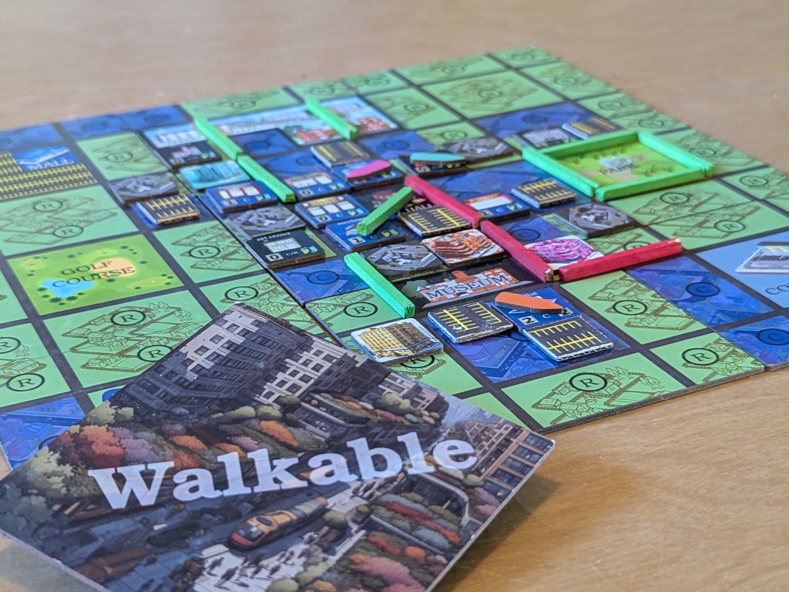

will stedden
will stedden 
CITY MOTION: Transforming Cities One Game at a Time — Update: The game was originally called Walkable, but was updated to the title CITY MOTION based on feedback from game testers. It has been updated below. I don’t think I’ve ever worked on a project longer than the board game I’ve finally finished. The idea was born while I was doing chores on a farm in the New Mexico desert, and now three painstaking years and more than 100 test games later, I’m extremely proud of all the work I’ve put into it. And now, I’m ready to share it ...